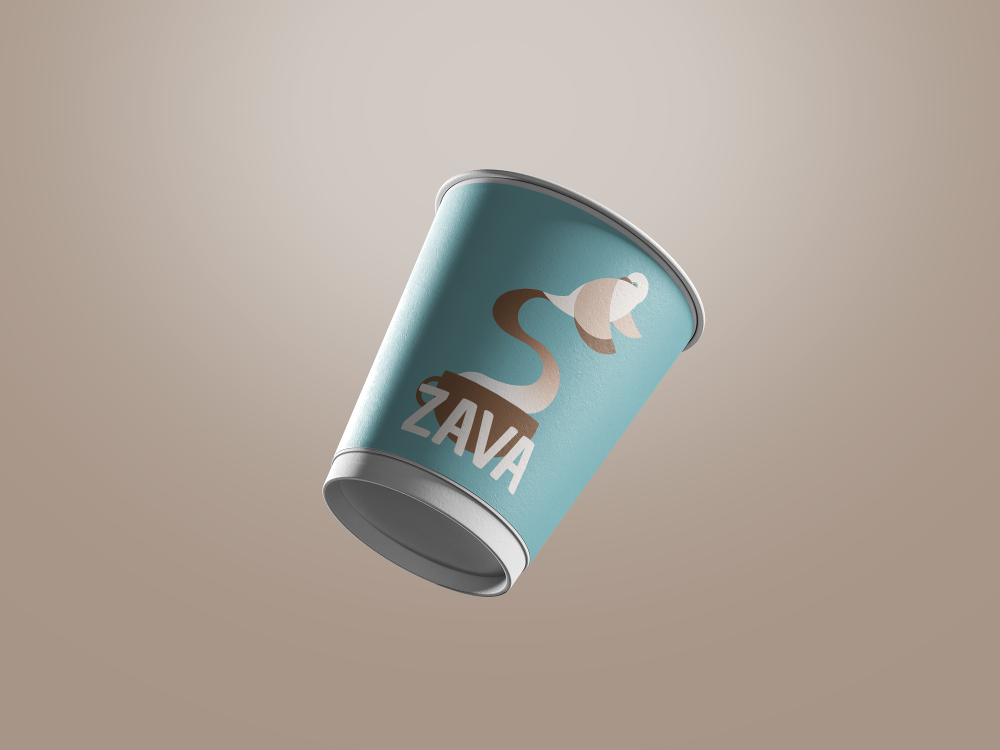
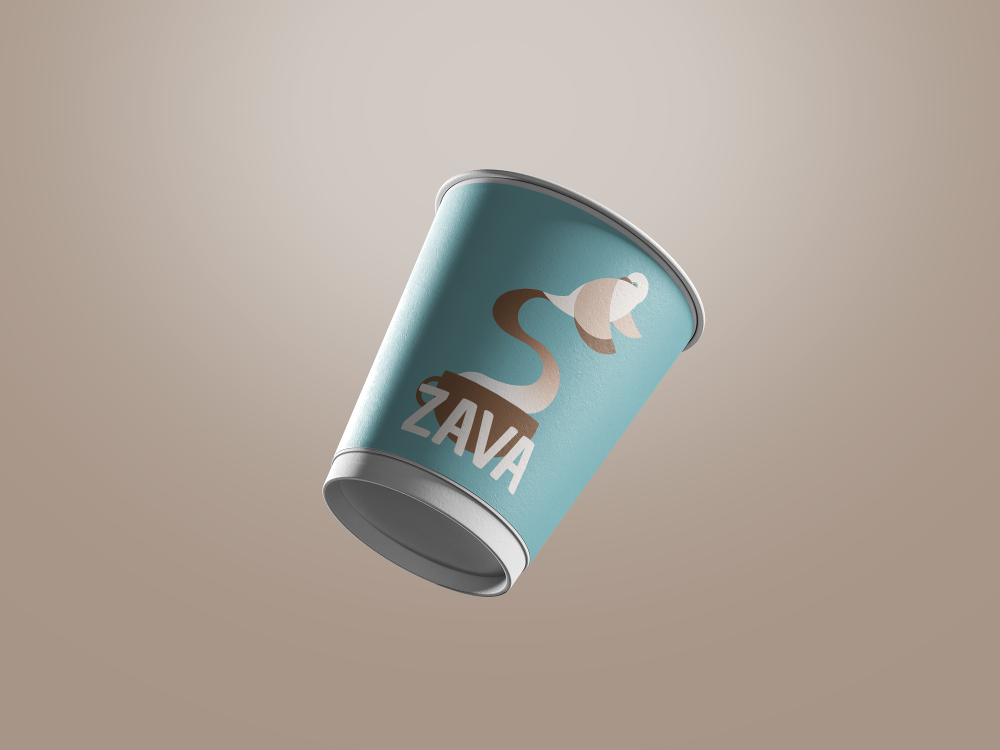

Portfolio Personal
Hola, este es un portfolio sencillo con mis trabajos favoritos realizados durante la carrera de diseño gráfico en la easda
Postales para la exposición de Kara Walker
Rebranding del Mercado Central de Alicante
Rotoscopia animada
-
 

- Proyecto identidad visual para una cafetería
Los trabajos presentes en este portfolio han sido realizados durante los primeros años de la carrera
Por favor no los juzguéis muy duramente
Este portfolio ha sido realizado para la asignatura Técnicas de Producción y Edición Digital 1